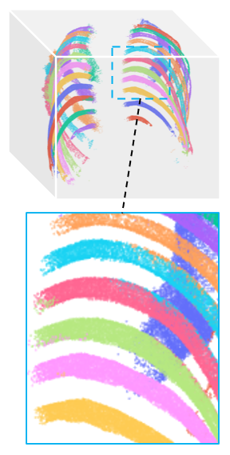
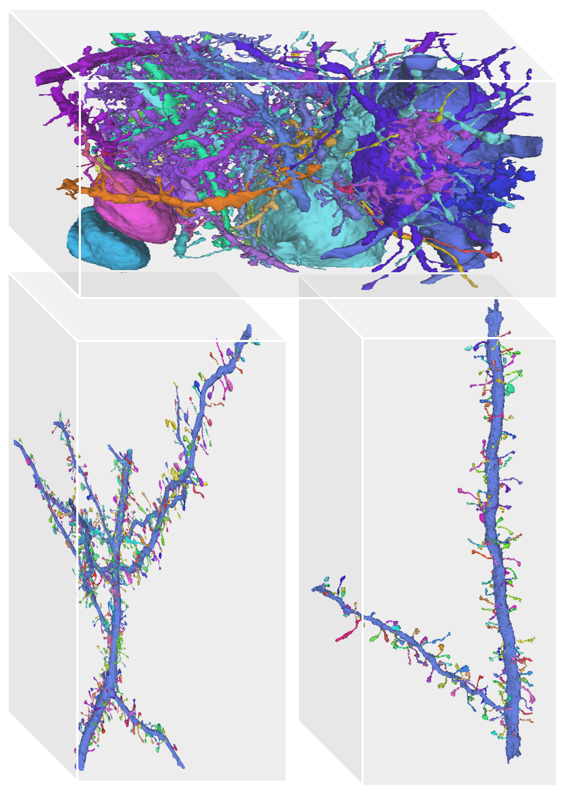
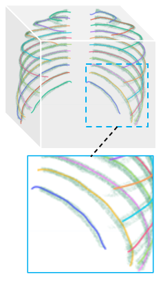
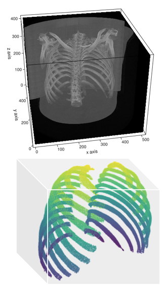

I am a Master's student in Biomedical Engineering and Computer Science at , advised by Prof. in the . I was a visiting research fellow in the at , advised by Prof. and Prof. . Before joining , I obtained a bachelor’s degree from the at , where I was privileged to work under Prof. and Dr. .
CV
shixuang@andrew.cmu.edu
I am now applying to the Ph.D. program for Fall 2023.
Research Interest
My research interest lies in geometric deep learning with applications in biomedical image analysis. My latest research focuses on 3D registration and reconstruction in [ ] and rib analysis.
I also build robots for fun, and once won the world championship in VEX robotics event.
[Check the robots I built. ]

RibSeg v2: Benchmark of Rib Segmentation, Labeling, and Anatomical Centerline Extraction
*,
*,
Liang Jin*,
,
,
,
,
IEEE Transactions on Medical Imaging (IEEE TMI), 2022, (in submission)

FreNet Frame: A Skeleton-based Method for Segmentation of Elongated Objects
,
,
,
,
,
IEEE Transactions on Medical Imaging (IEEE TMI), 2022, (in submission)

[preprint to be released on arXiv]
Ribbon: Template Alignment-based Rib Anatomical Centerline Extraction from CT Scans
*,
*,
,
,
(manuscript)

RibSeg Dataset and Strong Point Cloud Baselines for Rib Segmentation from CT Scans
*,
*,
,
,
International Conference on Medical Image Computing and Computer-Assisted Intervention (MICCAI), 2021
[2021] Biomedical Engineering Department Head's Fellowship
College of Engineering,
[2021] Outstanding Graduate of Shanghai Jiao Tong University
[2019]
,
[2018] Create Award, Robot Skills Finalist, and Silver Award
2018 12th Asia-Pacific Robotics Championship, Asian Robotics League
[2018]
[2018] Leading Student Ambassador, Excellent Student Presentation Award
,
[2016] First Prize and Best Con in Shanghai ( Shanghai)
Shanghai Physical Society, China
Teaching Assistant @ : Artificial Intelligence and Data Science (COM SCI - 960.01: Aug'21), Research Methodologies (ENGL 902: Aug'21), Academic Writing (ENGL 901: Aug'21).
Tools: Python, Pytorch, C++, ITK, CyberTorcs, RobotC, SolidWorks, Javascript, HTML, etc.
Hobbies: physics, robotics competition, basketball, literature, guitar, and cooking.
"Do not go gentle into that good night."